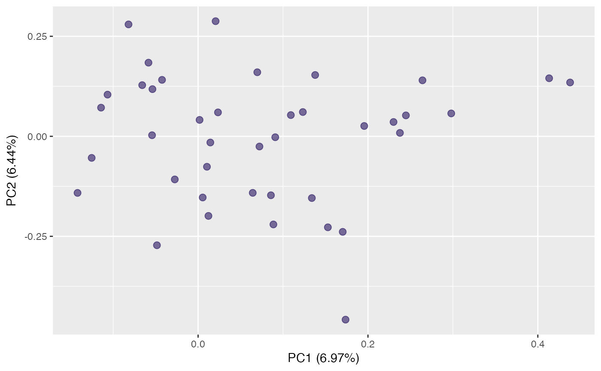
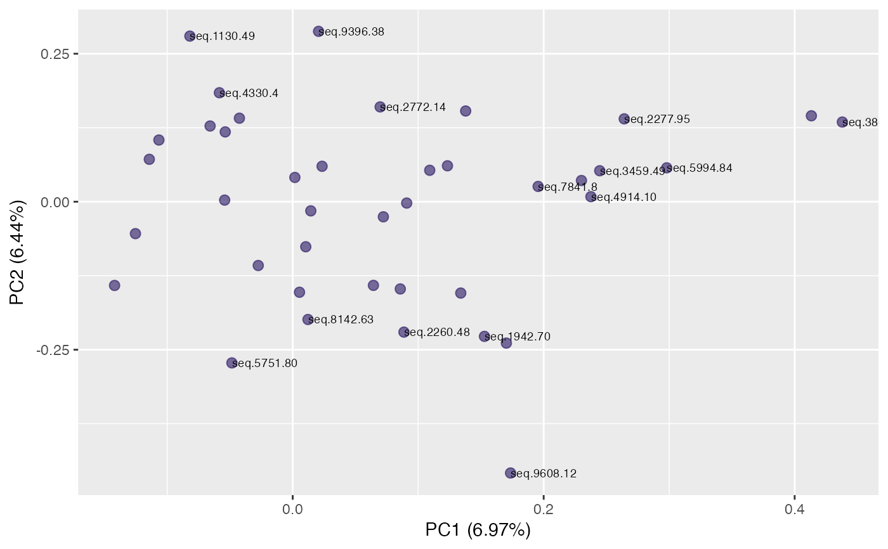
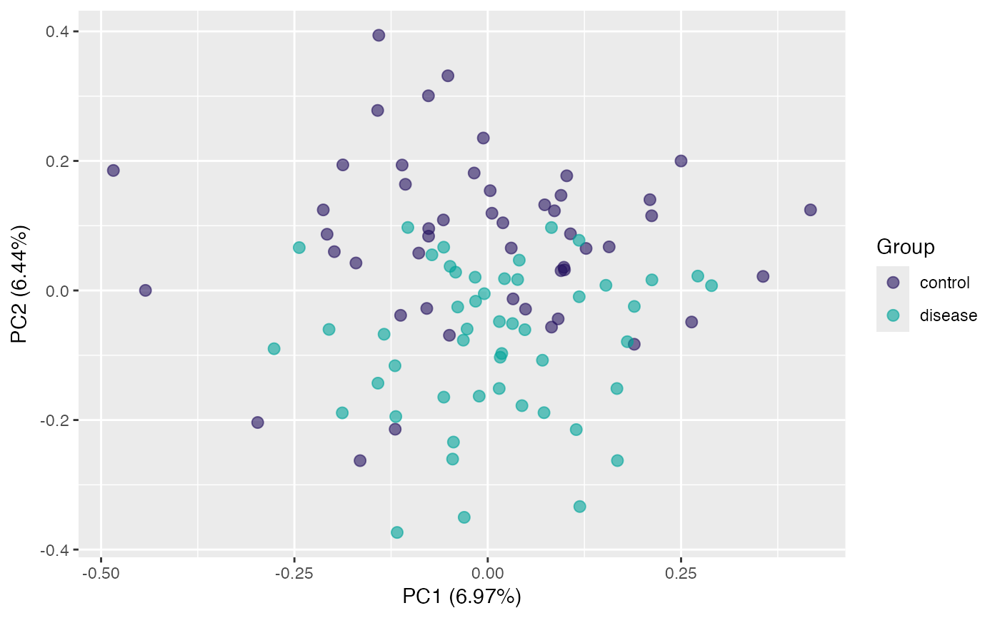
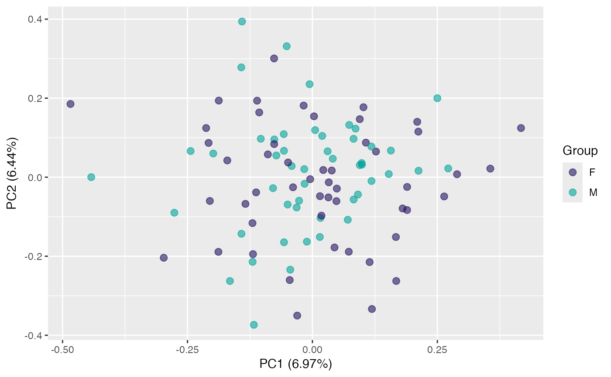
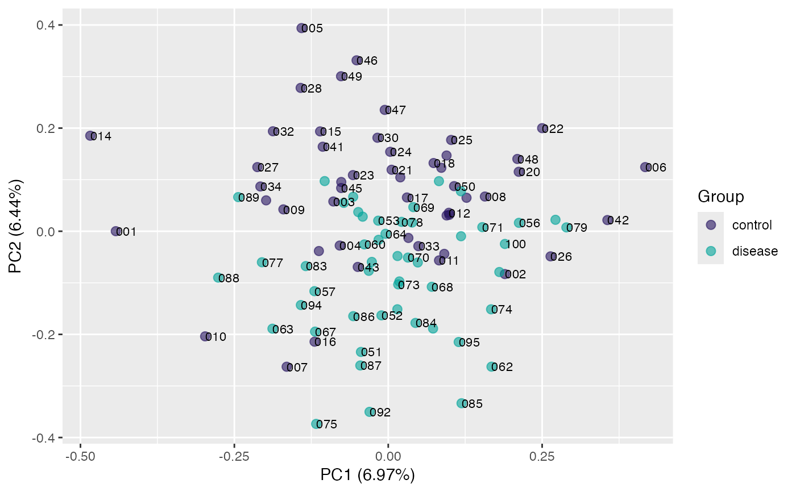
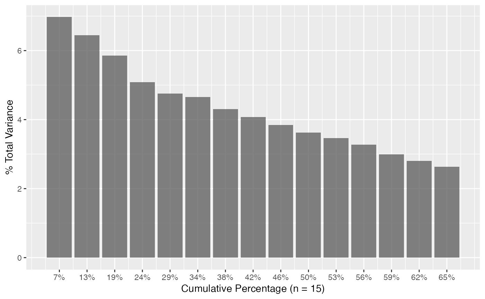
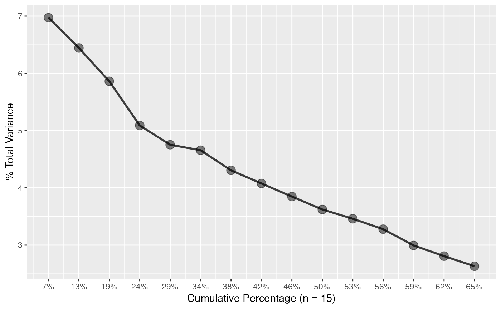

Principal Component Analysis
pca.RdPerform principal component analysis (PCA) on a proteomic data matrix,
via the decomposition of the variance-covariance matrix (SVD).
Some modification of the standard prcomp() is performed.
Data transformations (e.g. centering and/or scaling) can be performed
via its arguments.
The plot_scree() function generates a "scree plot"
of a pca class object.
Usage
pca(data, features = NULL, center = TRUE, scale = FALSE)
# S3 method for class 'pca'
print(x, ...)
# S3 method for class 'pca'
plot(
x,
type = c("projection", "rotation"),
dims = 1:2L,
color,
identify = FALSE,
id.labels,
...
)
plot_scree(
x,
n = min(15L, length(attributes(x)$sdev)),
type = c("barplot", "lines")
)Arguments
- data
A
data.frame(ortbl_df) class object.- features
character(n). Which columns to consider the features.- center
logical(1). Should the features/variables be zero centered prior to decomposition? In general this should be performed so that variables are in the same space, thus defaults toTRUE.- scale
logical(1). Should the features be scaled to have unit variance prior to decomposition? IfTRUE, this corresponds to PCA in correlation space as opposed to covariance space.- x
A
pcaclass object.- ...
Additional arguments passed to
geom_point().- type
Either "projection" (default) or "rotation". If called from
plot_scree(), either "barplot" (default) or "lines". Will be matched.- dims
integer(2). Which dimensions to plot.- color
An unquoted string indicating the variable in
x$projectionto color points by. Required forprojectionplots.- identify
Logical. Identify points? For
rotationspace, the top10target names in each dimension are identified.- id.labels
An unquoted string indicating the variable in
x$projectioncontaining point labels. Ignored forrotationplots.- n
integer(1). The number of components to plot.
Value
A pca class object, similar to prcomp().
Methods (by generic)
print(pca): The S3 print method forpcaclass objects.plot(pca): The S3 plot method forpcaclass objects.
Examples
pca <- pca(pcapkg:::log10_ft(simdata))
# print method
pca
#> ── PCA Object ─────────────────────────────────────────────────────────
#> Rotation 40 x 49 (PC1:PC40)
#> Projection 100 x 56 (PC1:PC40)
#> Projection variables '.id', 'id', 'class_response', 'reg_response', 'time', 'status', 'SampleId', 'SlideId', 'Subarray', 'SiteId', 'age', 'gender', 'HybControlNormScale', 'NormScale_40', 'NormScale_0_005', 'NormScale_1'
#> ═══════════════════════════════════════════════════════════════════════
# S3 plot methods
plot(pca, "r") # default rotation

plot(pca, "r", identify = TRUE) # label targets

plot(pca, "p", color = class_response) # default samples projection

plot(pca, "p", color = gender) # use "gender" for colors

plot(pca, "p", color = class_response, id.labels = id) # label points

plot(pca, "p", color = class_response, alpha = 0.5) # adjust point alpha
#> Warning: Duplicated aesthetics after name standardisation: alpha
# Scree plots
plot_scree(pca) # barplot

plot_scree(pca, type = "l") # lines

plot_scree(pca, type = "l")